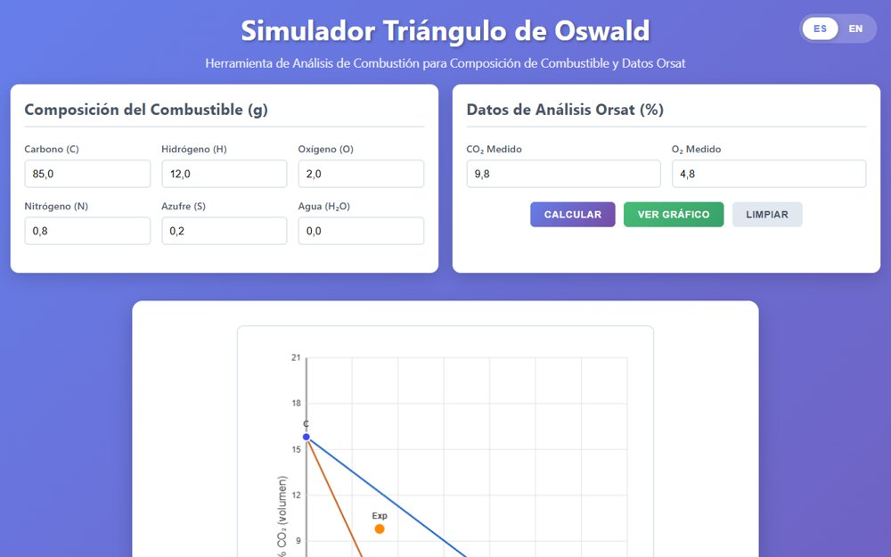

Sobre mí
Hola, soy Nico.
Me recibí de técnico electricista en 2020 y al año siguiente volví a la misma escuela, como docente de Circuitos Eléctricos. En paralelo curso Ingeniería Electromecánica en la UTN.
Cuando un tema cuesta explicarlo en el pizarrón, le hago un simulador. Y si un cálculo hay que repetirlo miles de veces, lo programo. También hago software a medida, sentado con quien lo va a usar para entender cómo trabaja.
- Dónde estoy
- San Rafael, Mendoza, Argentina
- Disponibilidad
- Desde comienzos de 2027, full time
- Estudios
- Ingeniería Electromecánica, UTN San Rafael. Graduación prevista en 2027
- Docencia
- Circuitos Eléctricos 1 y 2, desde 2021
- Idiomas
- Español nativo, inglés intermedio
Proyectos
Trabajo seleccionado
Cada proyecto cuenta el problema, qué hice y hasta dónde llega.

Simuladores de circuitos eléctricos
Simuladores y material de estudio que se usan desde el navegador.
- HTML
- CSS
- JavaScript

Triángulo de Oswald
Herramienta web para analizar una combustión con el diagrama de Oswald.
- HTML
- JavaScript
- Canvas
Simulador de neutro flotante
Muestra qué tensiones aparecen cuando se corta el neutro con cargas desequilibradas.
Motor paso a paso con Arduino
Control de un motor paso a paso con pulsadores y finales de carrera.
PCScanner
Relevamiento de hardware para el servicio técnico.
Laboratorio
¿Qué pasa si se corta el neutro?
Es un tema que doy en clase y se entiende mejor jugando. Cambiá las cargas y mirá cómo se corre el neutro: unas fases quedan con tensión de más y otras de menos.
Desplazamiento del neutro: . Fuente ideal de 220 V por fase y cargas resistivas.
Trayectoria
El recorrido
Tec.Nito
Empiezo a trabajar por mi cuenta en reparación de equipos, redes y armado de workstations. Lo sigo haciendo.
Técnico Electricista
Escuela 4-124 Reynaldo Merín.
Ingeniería Electromecánica y docencia
Entro a la UTN San Rafael y, en octubre, empiezo a dar Circuitos Eléctricos 1 y 2 en la escuela donde me recibí.
Tecnicatura Universitaria en Programación
Cursada completa entre 2022 y 2024. Equivalencia pendiente de acreditar.
Sistemas de potencia y software a medida
Estudio preliminar de capacidad dinámica de una línea de 132 kV y desarrollo de Nexxo, un sistema de gestión que ya funciona en paralelo con el anterior. Termino de cursar la carrera.
Lo que sigue
Recibirme de ingeniero y trabajar en proyectos eléctricos.
Ingeniería
- Mathcad
- AutoCAD
- Autodesk Inventor
- Excel
- ETAP (inicial)
Programación
- Python
- JavaScript
- TypeScript
- React
- FastAPI
- PostgreSQL
Control de versiones
- Git
- GitHub
¿Trabajamos juntos?
Escribime por correo o encontrame en LinkedIn y GitHub.